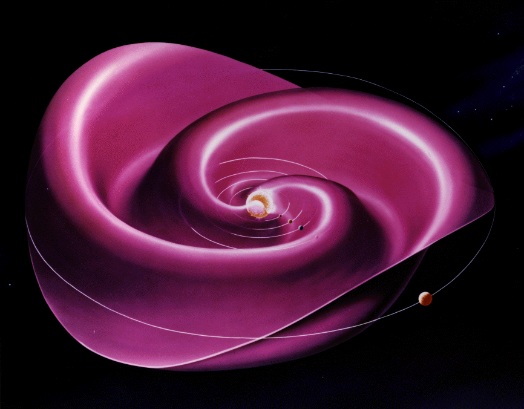

16 Solar Wind
The solar wind is a high-speed particle stream continuously blown out from the Sun into interplanetary space. It extends far beyond the orbit of the Earth, and terminates in a shock front, called the heliopause, where it interfaces with the weakly ionized interstellar medium. The heliopause is predicted to lie between 110 and 160 AU (1 Astronomical Unit is \(1.5\times 10^{11}\)m) from the center of the Sun. Voyager 1 & 2, which were launched in 1977, have passed through the heliopause, and are still functional!
In the vicinity of the Earth, (i.e., at about 1 AU from the Sun) the solar wind velocity typically ranges between 300 and 1400 \(\mathrm{km}\,\mathrm{s}^{-1}\). The average value is approximately \(500\,\mathrm{km}\,\mathrm{s}^{-1}\), which corresponds to about a 4 day time of flight from the Sun. Note that the solar wind is both super-sonic and super-Alfvénic.
The solar wind is predominately composed of protons and electrons.
Amazingly enough, the solar wind was predicted theoretically by Eugine Parker in 1958, a number of years before its existence was confirmed using satellite data. Parker’s prediction of a super-sonic outflow of gas from the Sun is a fascinating scientific detective story, as well as a wonderful application of plasma physics.
The solar wind originates from the solar corona. The solar corona is a hot, tenuous plasma surrounding the Sun, with characteristic temperatures and particle densities of about \(10^6\)K and \(10^{14}\,\mathrm{m}^{-3}\), respectively. Note that the corona is far hotter than the solar atmosphere, or photosphere. In fact, the temperature of the photosphere is only about 6000 K. It is thought that the corona is heated by Alfvén waves emanating from the photosphere together with a turbulent cascading process. The solar corona is most easily observed during a total solar eclipse, when it is visible as a white filamentary region immediately surrounding the Sun.
Let us start, following Chapman, by attempting to construct a model for a static solar corona. The equation of hydrostatic equilibrium for the corona takes the form
\[ \frac{\mathrm{d}p}{\mathrm{d}r} = - \rho\,\frac{G\,M_\odot}{r^2} \tag{16.1}\]
where \(G= 6.67\times 10^{-11}\,\mathrm{m}^{3}\,\mathrm{s}^{-2}\,\mathrm{kg}^{-1}\) is the gravitational constant, and \(M_\odot=2\times 10^{30}\,\mathrm{kg}\) is the solar mass. The plasma density is written
\[ \rho\simeq n\,m_p \tag{16.2}\]
where \(n\) is the number density of protons. If both protons and electrons are assumed to possess a common temperature, \(T(r)\), then the coronal pressure is given by
\[ p = 2nk_B T \tag{16.3}\]
The thermal conductivity of the corona is dominated by the electron thermal conductivity, and takes the form (???)
\[ \kappa = \kappa_0\,T^{5/2} \]
where \(\kappa_0\) is a relatively weak function of density and temperature. For typical coronal conditions this conductivity is extremely high: i.e., it is about twenty times the thermal conductivity of copper at room temperature. The coronal heat flux density is written
\[ \mathbf{q} = -\kappa\nabla T \]
For a static corona, in the absence of energy sources or sinks, we require
\[ \nabla\cdot\mathbf{q} = 0 \]
Assuming spherical symmetry, this expression reduces to
\[ \frac{1}{r^2}\frac{\mathrm{d}}{\mathrm{d}r}\left(r^2\kappa_0\, k_B T^{5/2}\,\frac{dT}{\mathrm{d}r}\right) =0 \]
Adopting the sensible boundary condition that the coronal temperature must tend to zero at large distances from the Sun, we obtain
\[ T(r) = T(a)\left(\frac{a}{r}\right)^{2/7} \tag{16.4}\]
The reference level \(r=a\) is conveniently taken to be the base of the corona, where \(a\sim 7\times 10^5\,\mathrm{km}\), \(n\sim 2\times 10^{14}\,\mathrm{m}^{-3}\), and \(T\sim 2\times 10^{6}\)K.
Equation 16.1, Equation 16.2, Equation 16.3, and Equation 16.4 can be combined and integrated to give
\[ p(r) = p(a) \exp\left\{\frac{7}{5}\,\frac{G\,M_\odot\,m_p}{2k_B T(a)\,a} \left[\left(\frac{a}{r}\right)^{5/7}-1\right]\right\} \]
Note that as \(r\rightarrow\infty\) the coronal pressure tends towards a finite constant value:
\[ p(\infty) = p(a)\,\exp\left\{-\frac{7}{5}\,\frac{G\,M_\odot\,m_p}{2k_B T(a)\,a} \right\} \]
There is, of course, nothing at large distances from the Sun which could contain such a pressure (the pressure of the interstellar medium is negligibly small). Thus, we conclude, with Parker, that the static coronal model is unphysical.
Since we have just demonstrated that a static model of the solar corona is unsatisfactory, let us now attempt to construct a dynamic model in which material flows outward from the Sun.
16.1 Parker Solar Wind Model
By symmetry, we expect a purely radial coronal outflow. The radial momentum conservation equation for the corona takes the form
\[ \rho\,u\,\frac{du}{\mathrm{d}r} = -\frac{\mathrm{d}p}{\mathrm{d}r} - \rho\,\frac{G\,M_\odot}{r^2} \tag{16.5}\]
where \(u\) is the radial expansion speed. The continuity equation reduces to
\[ \frac{1}{r^2}\frac{\mathrm{d}(r^2\,\rho\,u)}{\mathrm{d}r} = 0 \tag{16.6}\]
In order to obtain a closed set of equations, we now need to adopt an equation of state for the corona, relating the pressure, \(p\), and the density, \(\rho\). For the sake of simplicity, we adopt the simplest conceivable equation of state, which corresponds to an isothermal corona. Thus, we have
\[ p = \frac{2k_B\rho T}{m_p} \tag{16.7}\]
where \(T\) is a constant. Note that more realistic equations of state complicate the analysis, but do not significantly modify any of the physics results.
Equation 16.6 can be integrated to give
\[ r^2\,\rho\,u = I \tag{16.8}\]
where \(I\) is a constant. The above expression simply states that the mass flux per unit solid angle, which takes the value \(I\), is independent of the radius, \(r\). Equation 16.5, Equation 16.7, and Equation 16.8 can be combined together to give
\[ \frac{1}{u} \,\frac{du}{\mathrm{d}r}\left(u^2 - \frac{2k_B T}{m_p}\right) = \frac{4k_B T}{m_p\,r} - \frac{G\,M_\odot}{r^2} \tag{16.9}\]
Let us restrict our attention to coronal temperatures which satisfy
\[ T < T_c \equiv \frac{G\,M_\odot\,m_p}{4k_B\,a} \]
where \(a\) is the radius of the base of the corona. \(T_c\) is the defined temperature where the right-hand side of Equation 16.9 is zero at \(r=a\). For typical coronal parameters (see previous section), \(T_c\simeq 5.8\times 10^6\)K, which is certainly greater than the temperature of the corona at \(r=a\). For \(T<T_c\), the right-hand side of Equation 16.9 is negative for \(a<r<r_c\), where (???)
\[ \frac{r_c}{a} = \frac{T_c}{T} \tag{16.10}\]
and positive for \(r_c<r<\infty\). The right-hand side of Equation 16.9 is zero at \(r=r_c\), implying that the left-hand side is also zero at this radius, which is usually termed the “critical radius”. There are two ways in which the left-hand side of Equation 16.9 can be zero at the critical radius. Either
\[ u^2(r_c) = u_c^2 \equiv \frac{2k_B T}{m_p} \tag{16.11}\]
or
\[ \frac{du(r_c)}{\mathrm{d}r} = 0 \tag{16.12}\]
Note that \(u_c\) is the coronal sound speed.
As is easily demonstrated, if Equation 16.11 is satisfied then \(du/\mathrm{d}r\) has the same sign for all \(r\), and \(u(r)\) is either a monotonically increasing, or a monotonically decreasing, function of \(r\). On the other hand, if Equation 16.12 is satisfied then \(u^2-u_c^2\) has the same sign for all \(r\), and \(u(r)\) has an extremum close to \(r=r_c\). The flow is either super-sonic for all \(r\), or sub-sonic for all \(r\). These possibilities lead to the existence of four classes of solutions to Equation 16.9, with the following properties:
- \(u(r)\) is sub-sonic throughout the domain \(a<r<\infty\). \(u(r)\) increases with \(r\), attains a maximum value around \(r=r_c\), and then decreases with \(r\).
- a unique solution for which \(u(r)\) increases monotonically with \(r\), and \(u(r_c) = u_c\).
- a unique solution for which \(u(r)\) decreases monotonically with \(r\), and \(u(r_c) = u_c\).
- \(u(r)\) is super-sonic throughout the domain \(a<r<\infty\). \(u(r)\) decreases with \(r\), attains a minimum value around \(r=r_c\), and then increases with \(r\).
These four classes of solutions are illustrated in Figure 16.1.

Each of the classes of solutions described above fits a different set of boundary conditions at \(r=a\) and \(r\rightarrow\infty\). The physical acceptability of these solutions depends on these boundary conditions. For example, both Class 3 and Class 4 solutions can be ruled out as plausible models for the solar corona since they predict super-sonic flow at the base of the corona, which is not observed, and is also not consistent with a static solar photosphere. Class 1 and Class 2 solutions remain acceptable models for the solar corona on the basis of their properties around \(r=a\), since they both predict sub-sonic flow in this region. However, the Class 1 and Class 2 solutions behave quite differently as \(r\rightarrow\infty\), and the physical acceptability of these two classes hinges on this difference.
Equation 16.9 can be rearranged to give
\[ \frac{du^2}{\mathrm{d}r}\left(1-\frac{u_c^{~2}}{u^2}\right) = \frac{4\,u_c^{~2}}{r} \left(1-\frac{r_c}{r}\right) \]
where Equation 16.10 and the definition of \(T_c\) have been used. The above expression can be integrated to give
\[ \left(\frac{u}{u_c}\right)^2 -\ln\!\left(\frac{u}{u_c}\right)^2 = 4\,\ln r + 4\,\frac{r_c}{r} + C \tag{16.13}\]
where \(C\) is a constant of integration.
Let us consider the behaviour of Class 1 solutions in the limit \(r\rightarrow\infty\). It is clear from Figure 16.1 that, for Class 1 solutions, \(u/u_c\) is less than unity and monotonically decreasing as \(r\rightarrow\infty\). In the large-\(r\) limit, Equation 16.13 reduces to
\[ \ln\frac{u}{u_c} \simeq -2\,\ln r \]
so that
\[ u\propto \frac{1}{r^2} \]
It follows from Equation 16.8 that the coronal density, \(\rho\), approaches a finite, constant value, \(\rho_\infty\), as \(r\rightarrow\infty\). Thus, the Class 1 solutions yield a finite pressure,
\[ p_\infty= \frac{2k_B\,\rho_\infty\,T}{m_p} \]
at large \(r\), which cannot be matched to the much smaller pressure of the interstellar medium. Clearly, Class 1 solutions are unphysical.
Let us consider the behaviour of the Class 2 solution in the limit \(r\rightarrow\infty\). It is clear from Figure 16.1 that, for the Class 2 solution, \(u/u_c\) is greater than unity and monotonically increasing as \(r\rightarrow\infty\). In the large-\(r\) limit, Equation 16.13 reduces to
\[ \left(\frac{u}{u_c}\right)^2 \simeq 4\,\ln r \]
so that
\[ u \simeq 2\,u_c\,(\ln r)^{1/2} \]
It follows from Equation 16.8 that \(\rho\rightarrow 0\) and \(r\rightarrow\infty\). Thus, the Class 2 solution yields \(p\rightarrow 0\) at large \(r\), and can, therefore, be matched to the low pressure interstellar medium.
We conclude that the only solution to Equation 16.9 which is consistent with physical boundary conditions at \(r=a\) and \(r\rightarrow\infty\) is the Class 2 solution. This solution predicts that the solar corona expands radially outward at relatively modest, sub-sonic velocities close to the Sun, and gradually accelerates to super-sonic velocities as it moves further away from the Sun. Parker termed this continuous, super-sonic expansion of the corona the solar wind.
Note that while the velocity prediction accords well with satellite observations, the Parker model’s prediction for the density of the solar wind at the Earth is significantly too high compared to satellite observations. Consequently, there have been many further developments of this model. In particular, the unrealistic assumption that the solar wind plasma is isothermal has been relaxed, and two-fluid effects have been incorporated into the analysis.
16.2 Parker Spiral
The interplanetary magnetic field (IMF), also called Parker spiral, is the component of the solar magnetic field that is dragged out from the solar corona by the solar wind flow to fill the Solar System. Depending on the polarity of the photospheric footpoint, the heliospheric magnetic field spirals inward or outward; the magnetic field follows the same shape of spiral in the northern and southern parts of the heliosphere, but with opposite field direction. These two magnetic domains are separated by a current sheet (an electric current that is confined to a curved plane). This heliospheric current sheet has a shape similar to a twirled ballerina skirt (Figure 16.2), and changes in shape through the solar cycle as the Sun’s magnetic field reverses about every 11 years.
KeyNotes.plot_IMF_3D()
16.3 Anisotropy in the Solar Wind
Observationally, Pioneer 6 showed that the ion temperature anisotropy in the solar wind at 1AU generally has \(T_\parallel > T_\perp\), together with other two interesting discoveries:
- high fluctuations of flow velocity outside the solar ecliptic plane;
- anisotropic ion thermal distribution (\(T_\parallel / T_\perp \sim [2,5]\));
- presence of a 3rd species, helium, from charge-to-mass ratio analysis of the angular and energy distributions.
It may possibly be explained by the conservation of the 1st adiabatic invariant Scarf, Wolfe, and Silva (1967).
The magnetic moment \(\mu = m v_\perp^2/2B\) is conserved as the collisionless solar wind flows outward from the sun. Near the solar equator the mean field magnitude declines with
\[ B_r(r) \simeq B_r(r_0)\Big( \frac{r_0}{r} \Big)^2 \]
and
\[ B_\phi(r) \simeq \frac{\Omega_r}{u(r)}B_r(r) \]
from the Parker spiral solar wind model and \(\Omega_r = 2.94\times 10^{-6}\) rad/s being the angular frequency of the rotation of the sun.
The adiabatic equation in the perpendicular direction indicates that the perpendicular thermal energy \(\langle m v_\perp^2/2\rangle = k_B T_\perp\) declines with B. Assuming in the rest frame the distribution function is a bi-Maxwellian of the form
\[ f(v) = \Big( \frac{m}{2\pi} \Big)^{3/2}\frac{1}{k_B T_\perp (k_B T_\parallel)^{1/2}} \exp\Big( -\frac{mv_\perp^2}{2k_B T_\perp} -\frac{mv_\parallel^2}{2k_B T_\parallel} \Big) \]
The conservation of the total thermal energy
\[ W = \int \mathrm{d}^3v \frac{mv^2}{2}f(v) \]
yields
\[ W = k_B T_\perp + k_B T_\parallel/2 = \text{const}. \]
These allows us to evaluate the variations in \(T_\perp\) and \(T_\parallel\) originating from isotropic distribution on the surface of the sun. Starting from \(T_\perp(0.3 AU) = T_\parallel(0.3 AU)\simeq 1.3\times 10^{5}\textrm{K}\), the predicted anisotropy \(T_\parallel / T_\perp\) at Earth can go beyond 20! Therefore, in fact, the reasonable question to ask is why the actual solar wind anisotropy factor is so small. In simulations, we always apply isotropic distribution in the upstream solar wind condition, which is primarily due to the fact that we are mostly using fluid models (i.e. MHD) for global magnetosphere-solar wind interactions. For kinetic models, we need more realistic distribution setups.
Well, we know now when pressure anisotropy develops, two kinds of plasma instabilities can be triggered: firehose when \(T_\perp < T_\parallel\) and mirror when \(T_\perp > T_\parallel\). Further studies require kinetic theory to describe their behaviors.
On the other hand, the opposite case, \(T_\perp > T_\parallel\), is also observed and believed to be related to local ion heating by macroscale compressions (e.g. high/low speed streams interaction) or plasma instabilities (Bame et al. 1975).
The mirror instability criterion as an additional relation to determine the pressure anisotropy downstream of the shock from the book Plasma instabilities and nonlinear effects by Hasegawa 1975,
\[ 1 + \sum_{\textrm{species}} \beta_\perp \big( 1 - \frac{\beta_\perp}{\beta_\parallel} \big) < 0 \]
16.4 Switchbacks
When Parker Solar Probe (PSP) sent back the first observations from its voyage to the Sun, scientists found signs of a wild ocean of currents and waves quite unlike the near-Earth space much closer to our planet. This ocean was spiked with what became known as switchbacks: rapid flips in the Sun’s magnetic field that reversed direction like a zig-zagging mountain road.

Our current understanding is that switchbacks may be generated from either magnetic reconnection, turbulence, or plasma velocity shears. There are models for each, but they all requires more testing from future PSP data.

See more in Switchbacks Science: Explaining Parker Solar Probe’s Magnetic Puzzle.
16.5 MHD Description
Because of the presence of a strong magnetic field carried by the wind, low-frequency fluctuations in the solar wind are usually described with MHD. However, due to some peculiar characteristics, the solar wind turbulence contains some features hardly classified within a general theoretical framework. (Tu and Marsch 1995) presents a thorough review of the turbulent phenomena in the solar wind from observations in the ecliptic. In the 1990s, with the launch of the Ulysses spacecraft, investigations have been extended to the high-latitude regions of the heliosphere.
Ruelle and Takens (1971) who showed that a strange attractor in the phase space of the system is the best model for the birth of turbulence. This gave a strong impulse to the investigation of the phenomenology of turbulence from the point of view of dynamical systems. Turbulence in the solar wind has been used as a big wind tunnel to investigate scaling laws of turbulent fluctuations, multifractals models, etc. Therefore, the solar wind can be seen as a very big laboratory where fully developed turbulence can be investigated not only per se, rather as far as basic theoretical aspects are concerned.